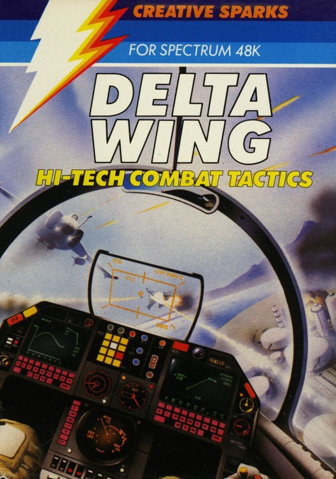
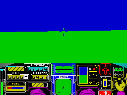
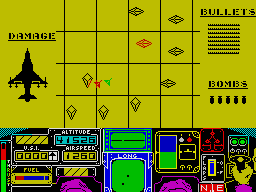

Delta Wing


{kind=link}

| Publisher: | Creative Sparks |
| Price: | £6.95 |
| Year: | 1984 |
| Source: | CRASH, Issue 10 |

Delta Wing is a battle flight simulation, but unlike Digital Integration’s Fighter Pilot, your aircraft is a make believe one — a very high performance one at that. Creative Sparks have also created a game for two players with two computers and monitors for a very realistic fight. But the game is also playable with one player against the computer. The game includes various skill levels and provides numerous friendly and enemy bases as well as enemy fighters to battle with.
There are four skill levels — trainer, novice, pilot and ace. On the simplest level the enemy aircraft do not move, and on the other levels the player may select the number of enemy bases to be attacked — one bomb is allowed for each base.

Delta Wing has a double display — instruments plus map and instruments plus windscreen view. The instrument panel is very detailed including meters for altitude, vertical speed (most useful in landing), brake indicator (for use on the ground or in the air), thrust, fuel, airspeed, artificial horizon, flaps and undercarriage (up or down). For attack purposes there are also the vertical position locator (VPL) and radar. A compass is also supplied for general direction in conjunction with the map. The VPL shows the height of enemy aircraft relative to your height. The radar has a long and short range scan.
In addition to the instruments, the graphic display also shows the pilot’s knee and hand on the joystick. The view through the cockpit window shows sky and ground relative to attitude and all movements are reflected in the instrument panel’s artificial horizon which shows pitch angle and roll angle. Once in visual range, enemy bases and aircraft appear as wire frame objects moving fully in 3D. Your own bases are similar, but a different configuration of lines.
Similar representations appear on the map together with your present position and that of enemy bombers etc.
Refuelling and re-arming require landing near a friendly base. Although there are no runways in the game, landing must be carried out fully. Landing too far away from a base need not be fatal, as it is possible to taxi towards one on the ground.
The packaging includes an excellent inlay with all instructions very simply laid out and with colour diagrams showing instrumentation and map display information.
CRITICISM

diamond is a destroyed enemy base
‘Delta Wing is like Fighter Pilot but it takes Fighter Pilot further so that bases which you can bomb are included. The screen layout is excellent and you can actually see the pilot’s legs and arm reacting to your key commands. Responses are also excellent and in some cases over-responsive. This is quite a good flight simulation/shoot em up type of game but the graphics of the enemy planes and bases are not that good. I still think Fighter Pilot is better but this is still a good game. The sound and menu options are fine and the bonus for friends with interface one of a two-handed game means they can play against each other. All in all another good game from Creative Sparks.’
‘This game must be compared to the highly successful Fighter Pilot, although compared against FP it is by no means as difficult to play or enjoy. Control layout is totally realistic and highly informative even though this is not actually a real plane. As you control the plane, everything is instantly on the move, pilot’s hands and knees move in accordance with your joystick, the instruments all react spontaneously — in this sense it is utterly perfect and in my opinion unbeatable. Enemy bases and aircraft are all wire drawn for graphic speed, but this doesn’t spoil any playability of the game whatsoever. Colour has been realistically used and especially on the instrument panel very impressively used. The graphics are very fast and very realistic. This is the most playable and enjoyable shoot em up that I’ve seen; although, saying that, it is detailed enough to be a simulation as well. I recommend it!’
‘It’s unavoidable to compare Delta Wing with Fighter Pilot but Delta Wing isn’t out to out-fly Fighter Pilot, because this is more of a shoot em up game than a simulation in the sense that FP was. For starters Delta Wing is not a real plane, and its manoeuvrability would probably rip the wings off most present day fighters. Sailing along at a comfortable height of 65,000 feet doing almost 2,000 knots is fun in itself, especially as at that speed you can see the symbol of your aircraft on the map moving quite clearly. But to nose dive from that height on an enemy base, see it appear as a small dot in the field of green, grow into a shape, and then pull out at the last second to whizz right over the top of it and bomb it is almost heaven! The various skill levels have been well chosen from the simplest right up to the ace level where the enemy fighters are no easy match. The controllability of Delta Wing is such, however, that you can really dog fight with the computer, slamming on your air brakes and rolling to get the enemy in front of your sights again. Because of this, the amazing graphics, their neatness and responsiveness, Delta Wing is the most like flying I’ve ever seen on a computer. It is huge fun, an absolute must!’
COMMENTS
| Control keys: | I/P left/right, W/Z up/down, N to fire. Additionally there are 10 function controls |
| Joystick: | Sinclair, Kempston, Fuller, AGF, Protek |
| Keyboard play: | Extremely responsive |
| Use of colour: | Excellent |
| Graphics: | Excellent, fast detailed very good wire frame 3D |
| Sound: | Good tunes, not much during game for speed of graphics |
| Skill levels: | 4 with 5 sub-levels |
| Lives: | 3 |
| Screens: | 2 |
| Special features: | 2-player game networked via Interface 1 |
| General rating: | Excellent. |
| Use of computer: | 85% |
| Graphics: | 94% |
| Playability: | 94% |
| Getting started: | 90% |
| Addictive qualities: | 89% |
| Value for money: | 87% |
| Overall: | 90% |